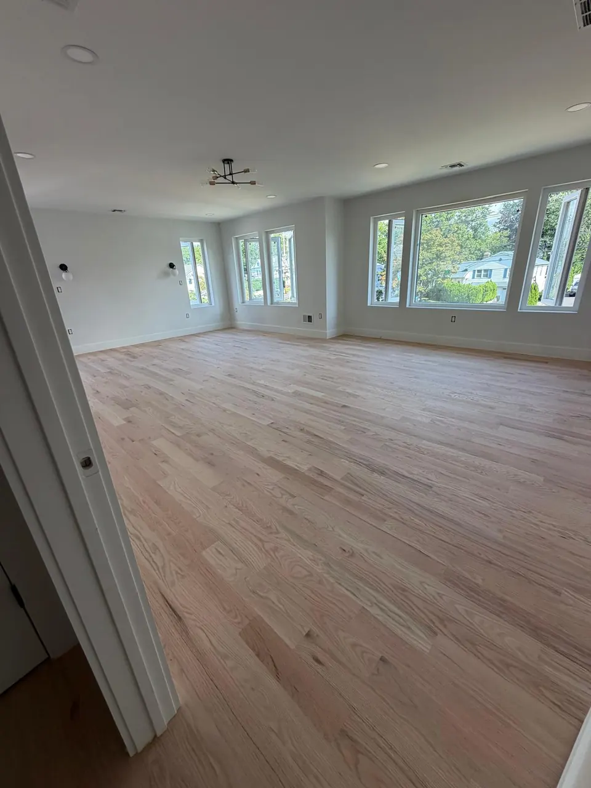

Hardwood floor sanding in Union County, the step that decides how the floor looks.
Flat, even, no drum marks, no swirls at the edges, and the dust kept out of your house. Dust-contained floor sanding in Linden and across North Jersey.
Anyone can rent a sander. The difference is in the passes.
What separates a good floor from a wavy one is knowing how many passes each species needs, keeping the machine moving, and blending the edges into the field so there's no halo along the walls.
- Drum, edge and buffer sanding down to clean wood
- Vacuum containment on the sanders, doorways and vents sealed
- Edges blended into the field so they look the same under finish
- Floor vacuumed and tacked before any stain or finish
Five passes, coarse to fine.
Coarse pass
The drum sander cuts through the old finish and levels the boards.
Edging
Along walls, under radiators and in closets where the big machine can't reach.
Medium and fine passes
Each grit removes the scratches from the one before it.
Buffing / screening
So the field and the edges look the same once finish goes on.
Vacuum and tack
Before any stain or finish touches the floor.
Dust, sanding on its own, and floors that can't take it.
Dust
Our sanders run with vacuum containment, and we seal doorways and vents in the work area. It's not zero dust, nobody's is, but it's a wipe-down, not a week of cleaning.
Sanding as a standalone service
If you want to apply your own finish, or you have a painter handling it, we sand only and leave the floor ready. We'll tell you what grit we finished at so the next step goes smoothly.
Floors that can't be sanded
Laminate, thin-veneer engineered floors, and solid wood sanded down to the tongue. We check at the estimate. If it's too thin, we'll quote a new installation honestly rather than sand and hope.
Sanded, stained and finished, photographed on our own phones.
Drag the handle. Sanding is usually part of a full refinishing job; this hallway went from gray and patched to this.

 Before
After
Before
After
Hallway sanded to bare wood, stained and finished. Union County, NJ.
What homeowners say after the sander leaves.
Renato arrived even earlier than scheduled. He did a fantastic job sanding, staining, and refinishing multiple rooms and stairs. Great to work with!
My floors look beautiful! Costa was very detailed in helping me find the right color and gloss. Everything came out even better than I had hoped.
Excellent renovation of our home flooring. The team was friendly, responsive, and highly organized. Impeccable, clean work throughout.
Sanding questions we hear every week.
Our sanders run with vacuum containment, and we seal doorways and vents in the work area. It's not zero dust, but it's a wipe-down, not a week of cleaning.
Yes. If you want to apply your own finish, or a painter is handling the finish, we sand and leave the floor ready, and tell you what grit we finished at.
Laminate, thin-veneer engineered floors, and solid wood that's been sanded down to the tongue. We check at the estimate and quote a new installation honestly if the floor is too thin.
Stain goes on right after sanding, on bare wood. See floor staining for how we test colors on your floor first.
Flat, even floors ready for stain or finish.
Every one of these was sanded to bare wood first. Click any photo to see it larger.


What usually comes right after sanding.

Hardwood floor refinishing
Sand to bare wood, optional stain, two or three coats of finish. The job that changes a house the most.
Refinishing details
Floor staining
Natural, brown, gray or dark. Samples tested on your sanded floor so you choose from the real thing.
Staining details
Floor repair
Board replacement, pet and water damage, gaps, squeaks, and patching where a wall or vent came out.
Repair details